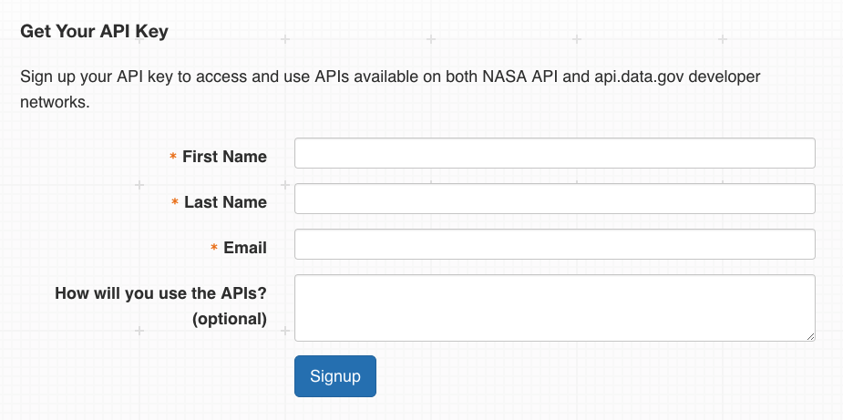

Documentation for this and other NASA APIs may be found at https://api.nasa.gov/api.html
Welcome!
Today you'll be learning about the EPIC API, one of many APIs offered by NASA's Open Innovation team. NASA provides an impressively long list of APIs through api.nasa.gov, including those related to Mars Rover images, Earth imagery, near-Earth objects, patents, and even space sounds. If you're at all interested in astronomy, climate, or geography, you'll likely find a NASA API that appeals to you.
The EPIC API provides access to metadata for "full disc" or "blue marble" images of Earth taken from the DISCOVR spacecraft. DISCOVR orbits the Sun approximately one million miles from Earth's surface, where its onboard EPIC (that is, Earth Polychromatic Imaging Camera) instrument captures the craft's stunning view of our planet. As you might expect, there are plenty of opportunities to do interesting things with the data that this API returns, and we'll see some of that shortly. If another API catches your eye, however, know that you'll be able to apply what you've learned here to interact with any NASA API that you please.
What We're Learning
In this guide, we'll show you how to access EPIC imagery data through NASA's API interface, and walk you through the process of using Javascript to make (and automate!) your own API calls. NASA's official documentation is somewhat brief, and although this particular API is fairly simple, there are a few undocumented "quirks" that you'll need to know about before delving too deeply. The API's documentation also doesn't include detailed code examples, so we'll address this by walking you through a few basic API calls in Javascript.
And, speaking of detailed code examples: I'm a firm believer in learning by doing, so this guide ends with a project that applies what you've learned in a fun and challenging way. We'll use the metadata provided by the mighty EPIC API to create a program that displays beautiful images of Earth, centered near geographical coordinates chosen by the user. After completing it, you'll hopefully have a sense of what is possible with the data provided by NASA's suite of APIs.
Getting Authenticated
First, however, we must obtain an API key. NASA allows access to any of its web services without authentication, although access rates are severely limited. Any non-trivial applications will almost definitely need to get and use a key for API requests. Fortunately, obtaining and using a key is very simple.
To get your very own key, navigate to https://api.nasa/gov. Scroll down to the section that reads "Get Your API Key." It looks like this:
Enter the necessary information, and click on the "Signup" button. You’ll receive an email in a few moments containing the long sequence of numbers and letters that form your API Key. You’ll also see a link that makes a simple call to the Astronomy Picture of the Day (or, APOD) API using your new key. If you click the link and see a string of text containing "date", "explanation", "hdurl", and so forth, your key is working! Congratulations.
A Word About Rate Limits
NASA restricts access to its Web Services on an hourly basis; at the moment, default access limits are 1,000 requests per hour, across all api.nasa.gov services. You’ll need to keep this in mind when designing an application that leverages a NASA API. Make too many calls, and your key will be temporarily blocked, which isn’t fun for anybody. In the context of many of NASA’s APIs, 1,000 requests is fairly limited, so plan accordingly. You'll see this come into play soon enough.
...And A Word About Documentation
The EPIC API appears to have two distinct sources of documentation. A brief list of endpoints and example queries is provided at https://api.nasa.gov, which itself links to another set of documentation maintained on https://epic.gsfc.nasa.gov/about/api. The two sites appear to be fairly consistent with one another, although the latter indicates a different set of URLs for accessing API endpoints. The endpoints indicated on api.nasa.gov provide CORS Support (more information about that here), and as such these will be the endpoints used in our guide. When it's necessary to reference a particular documentation source, however, we'll call the api.nasa.gov documents the "primary documentation", and the epic.gsfc.nasa.gov documents the "alternate documentation."
Ready To Make Something?
Well, you should be. Next, you'll learn how to send requests to NASA APIs - and interpret what they send back.